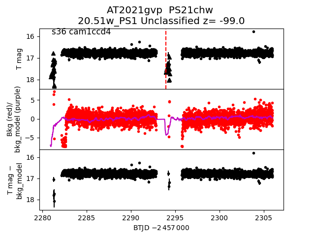
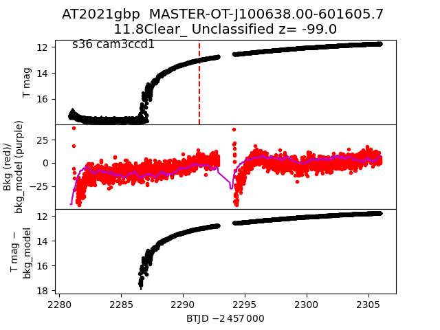
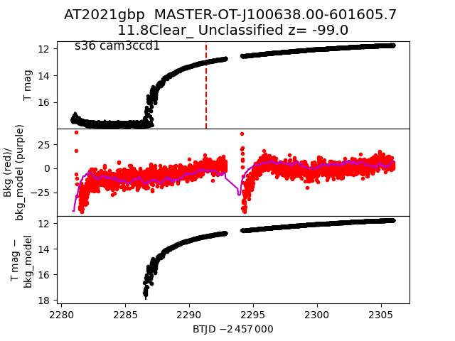
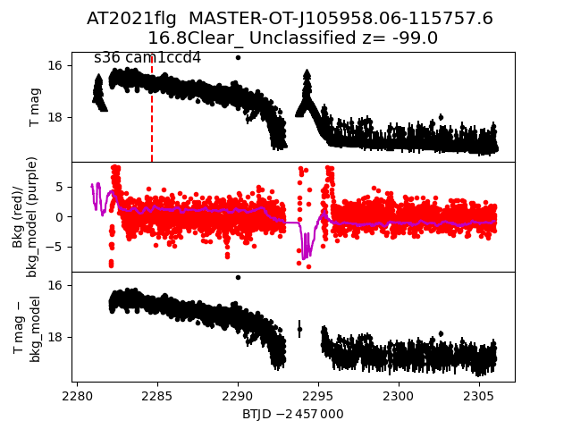
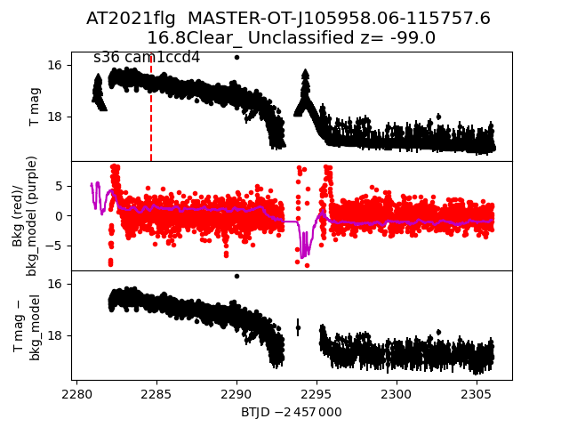

all transients in sector36 (55 total)
Each figure has three panels. The top panel shows the transient light curve, the middle panel shows the local background (estimated in an annulus), and the bottom panel shows a "background-model corrected" light curve. Details about the background model are in the README.
The vertical red line marks the time of discovery reported to TNS. Other useful metadata from TNS is in the figure title.
Note that the top and bottom panel are in magnitudes, while the middle panel is in differential flux units. The magnitudes are calibrated to the flux in the reference image used for image subtraction. Thus, flux from the host galaxy is included in these magnitudes.
3-sigma upper limits are plotted as triangles with no errorbars. A typical limiting magnitude is 19.6 in 30 minutes or 18.4 in 200 seconds (for low backgrounds).
The links allow you to download the light curve data as a text file.
More details in the README.
2021fzb
2021fmy
2021ezx
2021ftu
2021hit
2021gvp

2021hao
2021hoq
2021ico
2021fru
2021fxv
2021hzd
 2021gug
2021gst
2021hbn
2021gkb
2021fri
2021gfw
2021gug
2021gst
2021hbn
2021gkb
2021fri
2021gfw
 2021gfh
2021hph
2021frz
2021fvx
2021gbp

2021hfv
2021hcx
2021hkj
2021hup
2021gfh
2021hph
2021frz
2021fvx
2021gbp

2021hfv
2021hcx
2021hkj
2021hup
 2021hhw
2021hfq
2021hpf
2021htd
2021flg

2021hyq
2021gui
2021hpj
2021gte
2021gxu
2021gwn
2021hde
2021hhw
2021hfq
2021hpf
2021htd
2021flg

2021hyq
2021gui
2021hpj
2021gte
2021gxu
2021gwn
2021hde
 2021fvp
2021fvo
2021gfz
2021fud
2021guj
2021gup
2021hlg
2021fmw
2021hoe
2021fvc
2021flr
2021hsg
2021fan
2021frw
2021hpe
2021fvj
2021fvp
2021fvo
2021gfz
2021fud
2021guj
2021gup
2021hlg
2021fmw
2021hoe
2021fvc
2021flr
2021hsg
2021fan
2021frw
2021hpe
2021fvj